TL;DR — Four Takeaways from 413K Agent Traces
- Test early, test often. The single strongest predictor of agent success is the fraction of early bash commands dedicated to testing. This is TDD for AI agents — and it works.
- Just like humans, agents need to concentrate as well. Agents that scatter edits across 3+ files early are far more likely to fail — a dose-response effect validated across all 3 dataset splits. The Single Responsibility Principle holds for agents.
- Agents that repeat commands are stuck. Identical bash commands in the early phase predict failure — a genuine behavioral signal, not a task-difficulty confound.
- Many human SWE “best practices” don’t transfer. View-before-edit, grep-before-edit, incremental TDD cycles — these intuitive principles are confounded or reversed for AI agents. Agents are not junior developers.
Every day, thousands of AI agents attempt to solve real software engineering tasks. They read code, run tests, edit files, and submit patches. Each attempt leaves behind a detailed trace — a complete record of every tool call, every bash command, every file read and edit.
Nobody reads them.
The standard practice in the AI agent community is: run the agent, check if it passes, report the number. SWE-bench scores go up. Papers get published. The traces get thrown away. There is an entire industry of work on agent outcomes — leaderboards, benchmark comparisons, scaling curves — but virtually none on agent behavior. Nobody asks how the agent solved the problem, or why it failed. Nobody compares the behavioral strategies of a successful run versus a failed one on the same task. The field treats agents like black boxes and only looks at the output.
Imagine a hospital that runs thousands of surgeries, records every second on video, and then only checks whether the patient survived — never reviewing the footage to understand why.
We decided to watch this footage.
We systematically analyzed 413,278 SWE agent trajectories from the CoderForge-Preview dataset — spanning 4 dataset splits, over 51,000 unique software engineering tasks, and approximately 17 billion tokens of behavioral data. Using a hypothesis-driven statistical framework, we tested 30+ behavioral hypotheses (proposed by both humans and an AI analyzing AI behavior) and verified each one by comparing passing and failing runs on the exact same task — controlling for problem difficulty so that our findings reflect genuine agent behavior, not just “easy problems get solved.”
The strongest signal? A decades-old principle from human software engineering: Test-Driven Development.
The most surprising finding? Most human SWE best practices don’t transfer to AI agents — and some actively reverse.
The Scale: 17 Billion Tokens Nobody Has Looked At
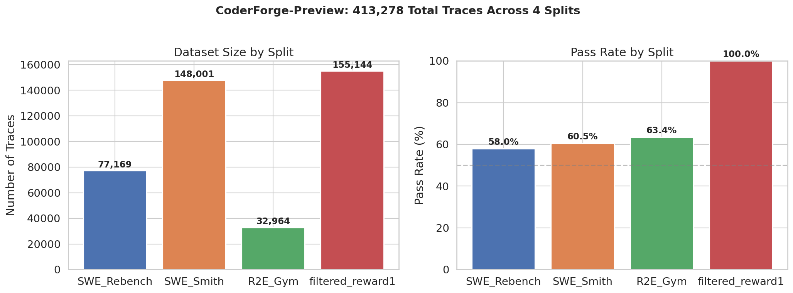
The CoderForge-Preview dataset is, to our knowledge, the largest public collection of structured AI agent behavioral data. It contains four splits, each capturing trajectories of agents attempting real GitHub issues:
| Split | Traces | Unique Issues | Pass Rate | Avg. Msgs/Trace |
|---|---|---|---|---|
| SWE_Rebench | 77,169 | 9,764 | 58.0% | 126.6 |
| SWE_Smith | 148,001 | 37,221 | 60.5% | 107.7 |
| R2E_Gym | 32,964 | 4,216 | 63.4% | 119.1 |
| filtered_reward1 | 155,144 | 35,140 | 100%* | 104.2 |
| Total | 413,278 | 51,201+ | — | 111.0 |
*filtered_reward1 contains only successful traces (curated for training). We use the three splits with mixed outcomes for our comparative analysis.
Each trace is a sequence of structured messages — system prompts, assistant reasoning, tool calls (bash commands, file edits, file views, think calls), and tool results. A single trace averages ~111 messages. Across 413K traces, that is 45.8 million messages and an estimated 17.2 billion tokens — roughly 40,000 novels of text, all meticulously recording how an AI approached, debugged, edited, and tested real software. All publicly available. All essentially unstudied — until now.
The traces contain behavioral information that aggregate metrics cannot capture: What tools does the agent use first? How does it allocate time between exploration and testing? When does it make its first edit? Does it verify its changes? These are the same questions we ask about human software engineers in code review — but for AI agents, we have never systematically asked them at scale.
The Task Difficulty Confounding (And how we prevented it)
Before showing what works, we need to explain a trap that invalidates most naive analyses: problem difficulty confounding. If you skip this section, nothing else in the blog will make sense. The trap is simple, devastating, and almost universally ignored in agent evaluation.
The most natural first analysis is straightforward: compare aggregate statistics between passing and failing traces.
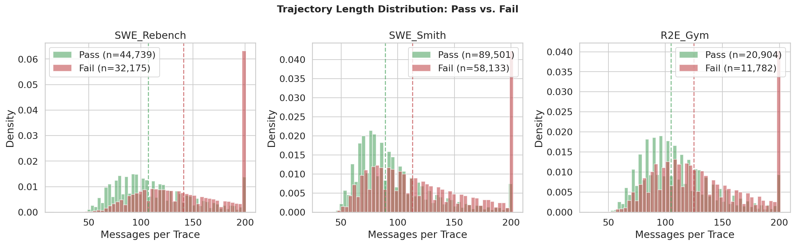
Across all three splits with mixed outcomes, the pattern is consistent: failing traces are longer. Failing agents run more bash commands, produce longer trajectories, and make more tool calls. The difference is statistically significant (p < 0.001). A naive analysis would conclude: “excessive activity early on predicts failure.”
This conclusion is completely wrong as a behavioral signal.
The problem is problem difficulty confounding. Hard tasks naturally produce longer, more active trajectories — regardless of whether the attempt succeeds or fails. An agent working on a complex multi-file refactoring will inherently run more commands than one fixing a simple typo. When we compare all passing runs against all failing runs, we are not comparing behavior — we are comparing the difficulty distribution of tasks each group happened to encounter. If you don’t control for problem difficulty, you’re measuring which problems are hard, not which agent behaviors matter.
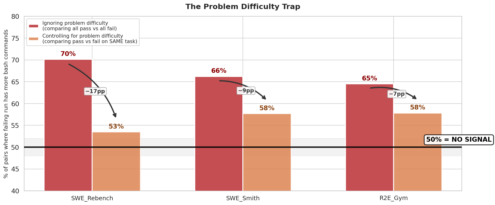
The plot above tells the story. The red bars show the naive analysis: when you randomly pair passing and failing runs across different tasks, the failing run has more bash commands 70% of the time (SWE_Rebench). Looks like a strong signal. Now look at the orange bars: when you compare passing and failing runs on the exact same task, the “signal” collapses to 53% — barely above a coin flip. The -17 percentage point collapse means almost the entire signal was just problem difficulty in disguise.
This is not a minor statistical footnote. It means that any analysis comparing pass vs. fail traces without controlling for problem difficulty will be dominated by which problems are hard, not by how agents behave. Most of the “obvious” signals vanish — or flip direction — once you compare runs on the same problem. Throughout this blog, every finding we report has been verified using this same-problem comparison. When we say a signal “predicts success,” we mean it predicts success even when the problem is held constant.
Our Method: Controlling for Problem Difficulty
The core challenge: how do you tell whether an agent behavior actually matters, or whether it just correlates with how hard the problem is? Our answer: compare passing and failing runs on the exact same problem. If a signal predicts success even when the problem is held constant, it is a genuine behavioral signal. If it vanishes, it was just a proxy for problem difficulty.
We formalize this into a two-stage verification framework:
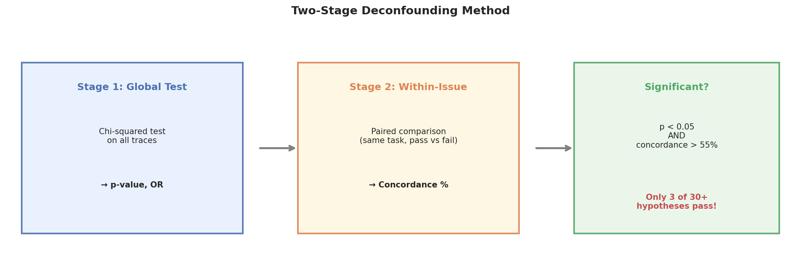
Stage 1: Global Chi-Squared Test. We define a binary behavioral feature (e.g., “fewer than 40% of early bash commands are test runs”) and compute its association with pass/fail outcomes across all traces using a chi-squared test with odds ratios. This establishes whether the signal has any aggregate predictive power.
Stage 2: Within-Issue Concordance (the difficulty control). This is the critical step that controls for problem difficulty. The CoderForge dataset contains multiple agent runs on the same GitHub issue — some succeed, some fail, all on the identical problem. For every task that has at least one passing and one failing run, we form all (pass, fail) pairs. For each pair, we ask: does the behavioral feature correctly distinguish the passing run from the failing run?
Concordance = (pairs where signal correctly distinguishes) / (total informative pairs)
Because both runs face the exact same problem, any difference in the signal is purely about agent behavior, not problem difficulty.
A concordance of 50% means the feature is no better than a coin flip when problem difficulty is held constant. Only features achieving concordance above 55% with sufficient pairs (n >= 10) survive.
On the full SWE_Rebench split (77,169 traces, 3,381 mixed-outcome issues), this gives us over 10,000 within-issue pairs — enormous statistical power to separate real behavioral signals from problem-difficulty artifacts.
We call a hypothesis significant only when it passes both tests: global p < 0.05 AND within-issue concordance > 55%. Every finding reported below survives this difficulty control. Most hypotheses do not — they look significant globally but collapse to chance once you compare the same problem.
The Results: Six Significant Behavioral Signals
On the full 77,169-trace SWE_Rebench dataset, we tested 30+ hypotheses. Only six survived both the global test and the problem-difficulty control. All six operate on only the first 30% of the trajectory — meaning these signals are detectable well before the agent finishes, and they predict success even when comparing runs on the exact same problem.
Signal 1: The Test Fraction — AI Agents Benefit from TDD Too
Feature: In the first 30% of the trajectory, fewer than 40% of bash commands are test-related.
Result: Within-issue concordance = 56.3%, n_pairs = 12,286. On the full dataset, passing agents allocate 45% of their early bash commands to testing, while failing agents allocate only 36%.
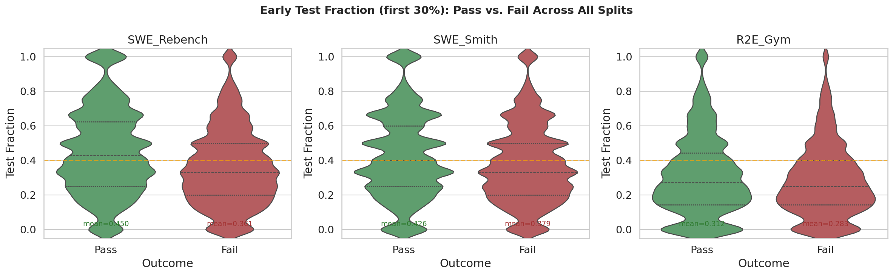
The violin plots above show the distribution of early test fraction across all three splits. The pattern is strikingly consistent: in every split, passing runs have a higher fraction of test-related bash commands. The distributions shift rightward for passing agents — they dedicate more of their early work to running tests.
This is the single most robust signal we found, validated across 12,286 within-issue pairs — meaning we compared 12,286 (pass, fail) run pairs on the same problem and the signal held. Note that this is a ratio feature, not an absolute count — it measures the proportion of bash activity dedicated to testing, which is why it survives difficulty control where absolute counts fail.
The finding has a direct analogy to human software engineering: Test-Driven Development (TDD). The principle that testing early and often leads to better outcomes is well-established in the human SWE literature. Our data shows it transfers directly to AI agents.
Signal 2: Exploration-Verification Balance
Feature: In the first 30% of the trajectory, more than 20% of bash commands are test-related.
Result: Within-issue concordance = 56.7%, n_pairs = 10,736.
This is a complementary view of Signal 1, using a lower threshold. Together, they paint a clear picture: the balance between exploration and verification in the early phase is a critical predictor of success.
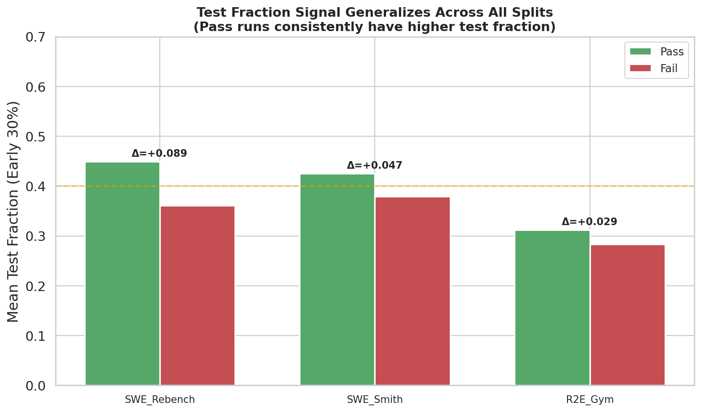
What makes this signal particularly powerful is that it generalizes across all three dataset splits:
| Split | Pass Test Frac | Fail Test Frac | Delta |
|---|---|---|---|
| SWE_Rebench | 0.450 | 0.361 | +0.089 |
| SWE_Smith | 0.426 | 0.379 | +0.047 |
| R2E_Gym | 0.312 | 0.283 | +0.029 |
The signal is strongest in SWE_Rebench (+0.089) but holds consistently. Failing agents tend to spend their early phase doing extensive codebase exploration — running find, grep, ls, viewing many files — without pausing to verify their understanding by running the test suite. Successful agents interleave exploration with testing from the start.
Signal 3: Repeated Bash Commands — Perseverance vs. Flailing
Feature: Agent runs the exact same bash command twice in the first 30% of the trajectory.
Result: Within-issue concordance = 59.6%, n_pairs = 6,510.
This was a surprise. At the 2K-sample scale, this signal looked borderline. At 77K traces, it emerged as one of the strongest behavioral signals (59.6% concordance across 6,510 same-problem pairs). Agents that repeat identical commands early are genuinely struggling — not just working on harder tasks. Even when we hold the problem constant, the failing run is significantly more likely to repeat a command. The agent is stuck, trying the same thing twice without adapting.
Signal 4: Multi-File Scatter — The Single Responsibility Principle for Agents
Feature: Agent edits 3+ distinct files in the first 30% of the trajectory.
Result: Within-issue concordance = 63.7%, n_pairs = 2,428. Agents editing 3+ files early have a 35.1% pass rate vs. 58.7% for agents editing fewer files.
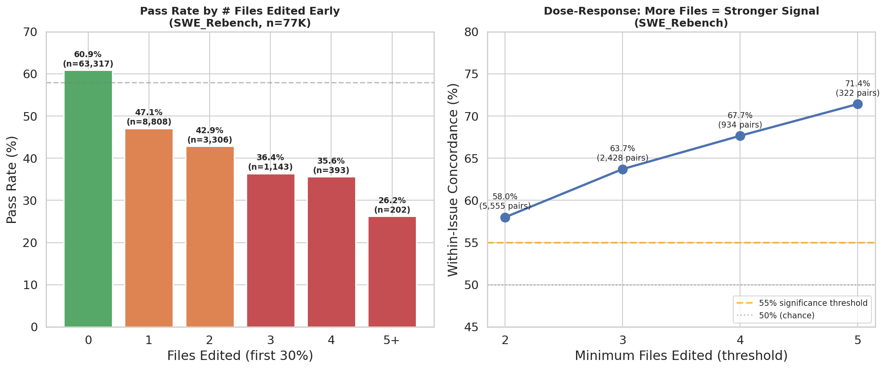
This is a new signal we discovered by testing human SWE principles — and it is one of our strongest, even after controlling for problem difficulty. The Single Responsibility Principle, a cornerstone of human software engineering, states that changes should be focused. Our data shows this transfers powerfully to AI agents: on the same task, agents that scatter edits across many files early are far more likely to fail than agents that stay focused.
What makes this signal compelling is the dose-response relationship: the more files an agent touches, the stronger the failure prediction.
| Files Edited | Concordance | Pairs |
|---|---|---|
| 2+ files | 58.0% | 5,555 |
| 3+ files | 63.7% | 2,428 |
| 4+ files | 67.7% | 934 |
| 5+ files | 71.4% | 322 |
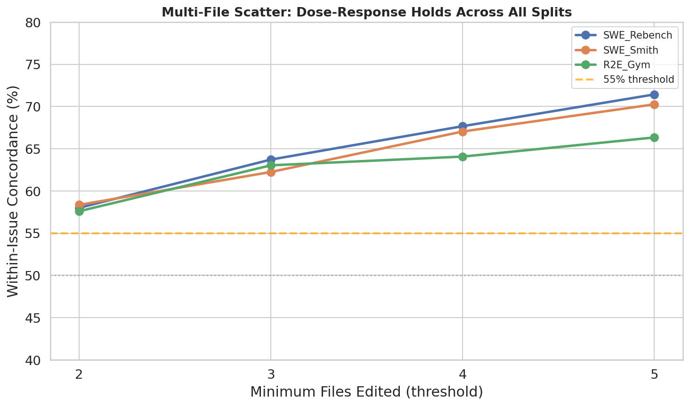
The signal also generalizes across all three dataset splits with remarkably similar concordance (58-63% at the 3-file threshold). This is not a dataset quirk — it is a robust behavioral pattern. An agent that sprays edits across multiple files early is probably confused about where the bug actually is. Focused agents fix one thing at a time.
Signal 5: Non-Test Bash Activity
Feature: More than 5 non-test bash commands in the early 30% of the trajectory.
Result: Within-issue concordance = 57.5%, n_pairs = 11,369.
This signal has the most dramatic scale story. At 2K traces, its concordance was 48.8% — below chance, seemingly indicating that the signal was a confound. We would have confidently dismissed it. At 77K traces, it flipped to a clear 57.5% concordance with 11K+ pairs, one of our strongest signals. The effect is real but subtle, invisible at small scale but unambiguous at full scale.
Why You Need 77K Traces, Not 2K
One of the most sobering lessons from this study: behavioral analysis at small scale is unreliable. We first ran this study on 2,000 traces. Several of our conclusions were wrong. Here is what changed when we scaled to the full 77K:
| Hypothesis | Concordance (2K) | Concordance (77K) | Significant? |
|---|---|---|---|
| Low test fraction | 59.0% | 56.3% | Yes (both) |
| Repeated bash command | 52.3% | 59.6% | 2K: No, 77K: Yes |
| Non-test bash heavy | 48.8% | 57.5% | 2K: No, 77K: Yes |
| 4+ consecutive bash | 53.8% | 53.5% | No (both) |
| Long initial think | 59.5% | 51.0% | 2K: Borderline, 77K: No |
The “long initial think” signal is the most cautionary case. At 2K traces, it showed 59.5% concordance — comfortably above our 55% threshold, borderline significant. At 77K, it collapsed to 51.0% — indistinguishable from chance. A study on 2,000 traces would have published this as a real finding. It is not.
Conversely, the “repeated bash command” signal went from insignificant at 2K (52.3%) to our second-strongest signal at 77K (59.6%). A smaller study would have missed it entirely. The lesson: behavioral trace analysis requires scale. The signals are real but subtle, and only emerge clearly with large datasets and proper deconfounding.
The Test-First Timing Signal
Beyond the binary hypothesis tests, we measured a powerful raw behavioral signal: does the agent run a test before making its first code edit?
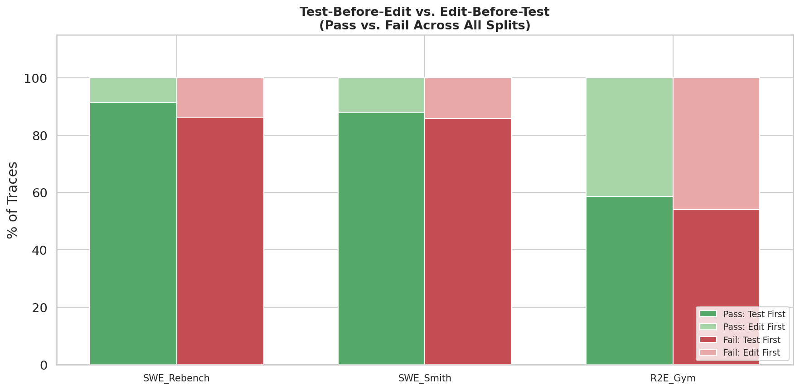
| Split | Pass: Test First | Fail: Test First | Pass: Edit First | Fail: Edit First |
|---|---|---|---|---|
| SWE_Rebench | 91.4% | 86.3% | 8.6% | 13.7% |
| SWE_Smith | 88.0% | 85.9% | 12.0% | 14.1% |
| R2E_Gym | 58.6% | 54.2% | 41.4% | 45.8% |
In SWE_Rebench, 91.4% of passing runs test before editing, versus 86.3% of failing runs. The gap is consistent across splits. When an agent edits code before running any test, it is significantly more likely to fail.
The Window Effect
How early can we detect the signal? We measured test fraction at different trajectory windows:
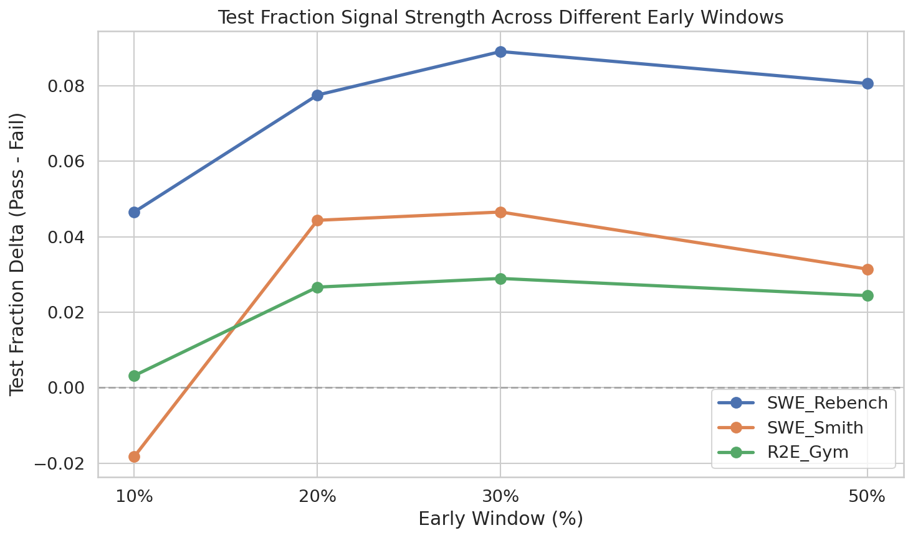
The signal is detectable even at the 10% mark of the trajectory, though it strengthens as more data accumulates. This means that an early-stopping system could begin making predictions very early in the agent’s run.
Which Human SWE Principles Transfer to AI Agents?
This is perhaps the most surprising part of our study. We systematically tested 15 behavioral features inspired by well-known human software engineering principles. We expected most of them to hold. Most of them don’t.
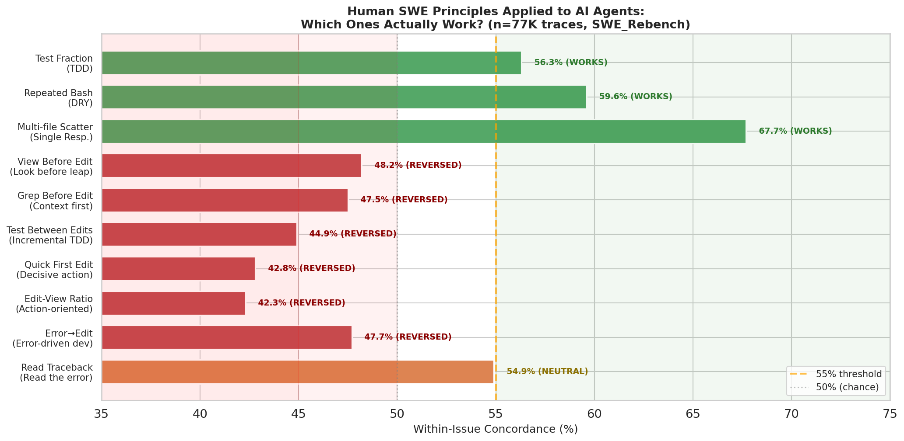
Principles That Transfer
Three human SWE principles survive our two-stage deconfounding test:
| Principle | Agent Feature | Concordance | Verdict |
|---|---|---|---|
| Test-Driven Development | Test fraction > 20% early | 56.7% | WORKS |
| Don’t Repeat Yourself | Repeated identical commands | 59.6% | WORKS |
| Single Responsibility | Multi-file scatter | 63.7% | WORKS |
These three principles share a common thread: they are about strategic discipline — doing the right thing rather than doing more things. TDD says test first. DRY says don’t repeat mistakes. Single Responsibility says focus your changes. None of them are about working harder or thinking longer. They are about working smarter.
Principles That Reverse
Here is the uncomfortable part. Several principles that feel right — that any code reviewer would recommend to a junior developer — actually go in the wrong direction for AI agents:
| Principle | Agent Feature | Concordance | Expected | Actual |
|---|---|---|---|---|
| Look before you leap | View file before editing it | 48.2% | Helps | REVERSED |
| Context first | Grep/search before editing | 47.5% | Helps | REVERSED |
| Incremental TDD | Test between consecutive edits | 44.9% | Helps | REVERSED |
| Decisive action | Quick first edit (within 15%) | 42.8% | Helps | REVERSED |
| Action-oriented | High edit-to-view ratio | 42.3% | Helps | REVERSED |
What is going on? Remember, these concordance numbers come from comparing runs on the exact same problem — so problem difficulty cannot explain the reversal. Within the same task, the failing run is more likely to view-then-edit, grep-then-edit, and test between edits. This seems paradoxical until you understand the mechanism:
Failing agents flail longer, generating more opportunities for “good” patterns to occur by accident.
A failing run on a hard task goes through multiple edit-test-fail cycles, each time viewing the file, grepping for clues, making an edit, running a test. These cycles look like incremental TDD. But they are actually repeated failed attempts. The passing run, by contrast, often views a few key files, makes one targeted edit, and succeeds — without needing the elaborate view-grep-edit-test ritual.
The lesson: Good process for humans is not always good process for agents. Humans benefit from careful preparation because they have limited working memory and need to build mental models. Agents process context differently — they have already ingested the file content in their context window. An agent “viewing before editing” is often repeating work it has already done, not building genuine understanding.
Principles That Are Neutral
A few principles showed no within-issue signal in either direction:
- Read the error message (view file from traceback): 54.9% concordance — close to threshold but not quite. This may become significant with more data or a refined detector.
- Error-driven development (edit after seeing error): 47.7% — slightly reversed, but essentially neutral. Errors don’t clearly drive better behavior in agents the way they do for humans.
A Tale of Two Traces: Same Task, Different Outcomes
To make these patterns concrete, consider this real example from our dataset. The task is issue #419 on sepal_ui, attempted by the same agent scaffold twice — once succeeding, once failing.
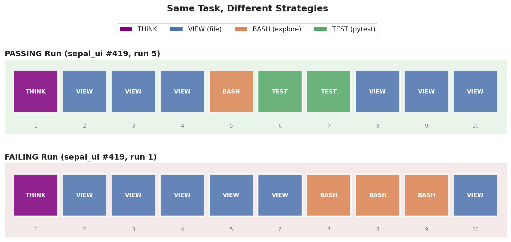
The passing run begins:
1. THINK (plan approach)
2. view(testbed) (orient to project)
3. view(README.rst) (understand project)
4. view(setup.py) (check dependencies)
5. BASH: find tests/ (locate tests)
6. TEST: pytest --version (verify test setup)
7. TEST: pytest tests/test_Theme.. (run failing test) <-- KEY MOMENT
8. view(sepal_ui/) (now explore with context)
The failing run begins:
1. THINK (plan approach)
2. view(testbed) (orient to project)
3. view(README.rst) (understand project)
4. view(sepal_ui/) (start exploring)
5. view(__init__.py) (more exploring)
6. view(test_ThemeSelect.py) (read test file... but don't run it)
7. BASH: find ... | xargs grep (search codebase)
8. BASH: find ... | xargs grep (search again)
9. BASH: find ... | xargs grep (search yet again)
Both start identically: think, then orient. But they diverge at step 5–6. The passing run quickly verifies the testing infrastructure and runs the failing test. The failing run continues exploring — reading files, running grep searches — without ever grounding its understanding in test execution.
The passing run: test fraction = 66%, edits 1 file. The failing run: test fraction = 0%, eventually scatters edits across multiple files.
This single example crystallizes every statistical pattern we found: TDD works, focus beats scatter, and exploration without testing fails.
The Graveyard: Signals That Fooled Smaller Studies
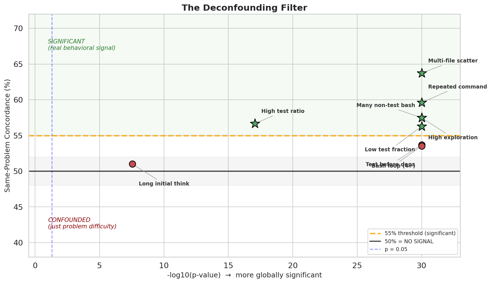
Equally instructive are the hypotheses that failed our problem-difficulty control. The scatter plot above shows every hypothesis we tested, plotted by global significance (x-axis) versus same-problem concordance (y-axis). The green stars in the upper-right are genuine behavioral signals — they predict success even on the same problem. The red dots in the lower-right are false positives — they look significant globally but collapse once you control for problem difficulty.
Key failures:
-
“4+ consecutive bash calls predict failure” — p < 0.001 globally, but same-problem concordance = 53.5%. On the same task, pass and fail runs have similar bash patterns. Bash-heavy sequences are characteristic of hard problems, not failing agents.
-
“Long initial think predicts failure” — Looked promising at 2K traces (59.5% concordance) but collapsed to 51.0% at full scale. A small-sample artifact.
-
“Test before installing dependencies predicts success” — Strong within-issue signal at 2K (65.4%), but dropped to 53.7% at 77K. The small-sample study would have called this the “strongest signal” — and been wrong.
The graveyard underscores two lessons: (1) you must control for problem difficulty — comparing runs on the same task is essential for separating real behavior from difficulty artifacts, and (2) small samples produce unreliable behavioral studies. You need the full dataset.
Dependency Installation: A Cautionary Tale
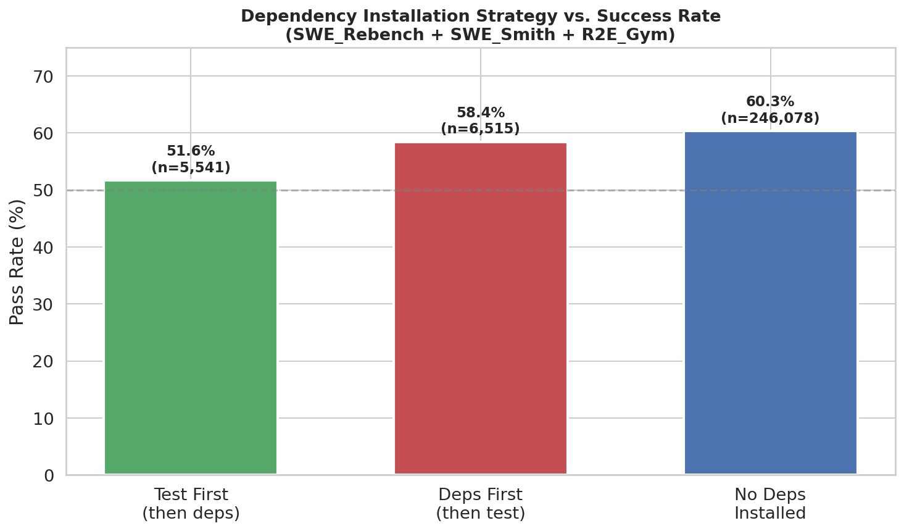
Here is where our small-sample analysis (2K traces) got it wrong. At 2K traces, “test before installing dependencies” looked like our strongest within-issue signal (65.4% concordance). We were ready to write the headline: “Reproduce before you fix.”
At full scale (258K traces across three splits), the pattern flips. Agents that install dependencies first actually have a higher pass rate (58.4%) than those that test first (51.6%). The within-issue concordance dropped from 65.4% to 53.7% — below our significance threshold. The pattern we thought was “reproduce the bug first” was actually a small-sample artifact.
We leave this plot in the blog intentionally, as a reminder: always validate on the full dataset. Our 2K-trace study would have published this as the headline finding. It would have been wrong.
Practical Guidance for Building Better Agent Scaffolds
Based on our 30+ hypotheses tested across 258K traces (3 comparative splits), here are concrete recommendations. Each one is backed by same-problem comparisons — these are not “easy problems pass more” artifacts, but genuine behavioral patterns that predict success even when problem difficulty is held constant:
1. Front-load testing (Concordance: 56.7%, 10,736 pairs). Before the agent starts exploring the codebase, have it run the existing test suite. This is not optional best practice — it is the single strongest behavioral predictor of success we found. Agent scaffolds should include explicit instructions like: “Before making any code changes, run the relevant tests to understand the current state.”
2. Enforce edit focus (Concordance: 63.7%, 2,428 pairs). Penalize or flag agents that attempt to edit 3+ files in a single trajectory turn. An agent editing many files early is probably confused about where the bug is. Consider adding guardrails: “Make changes to as few files as possible. If you find yourself editing 3+ files, stop and reconsider your diagnosis.”
3. Detect and break loops (Concordance: 59.6%, 6,510 pairs). Monitor for repeated identical bash commands. When an agent runs the same command twice without changing anything, it is stuck. Scaffolds should detect this pattern and inject a course correction: “You just ran this exact command. Try a different approach.”
4. Allocate early compute to testing, not exploration (Concordance: 57.5%, 11,369 pairs). An agent with low test fraction and high non-test bash activity in its first 30% is on a failing trajectory. Consider implementing an early-stopping signal: if an agent has run 5+ non-test bash commands without running any test, restart with a test-first strategy.
5. Don’t enforce human rituals. Our same-problem analysis shows that “view before edit” and “grep before edit” do not help agents — within the same task, failing runs actually exhibit these patterns more than passing runs. Scaffolds that force agents to view files before editing them, or to search before acting, may actually slow down passing runs without helping failing ones. Let agents leverage their context window — they don’t need to “read” a file they’ve already processed.
Conclusion
We analyzed 17 billion tokens of behavioral data across 413,278 agent trajectories — the largest systematic study of AI agent behavior we are aware of. Three findings stand out.
First, the signals that actually predict agent success are about strategic discipline, not raw effort. Testing early (TDD), staying focused (Single Responsibility), and avoiding repetition (DRY) — three decades-old human engineering principles — are the strongest behavioral predictors of agent success, even after controlling for problem difficulty. Agents that dedicate more of their early compute to testing, concentrate edits in fewer files, and avoid repeating identical commands are measurably more likely to succeed on the exact same task.
Second, most intuitive “best practices” don’t transfer from humans to agents — and some actively reverse. View-before-edit, grep-before-edit, incremental test-edit cycles — these patterns that any code reviewer would recommend to a junior developer are more common in failing agent runs, not passing ones. Agents are not junior developers. They process context differently, and forcing human rituals onto them may do more harm than good.
Third, behavioral trace analysis requires both scale and deconfounding to be reliable. At 2,000 traces, several of our conclusions were wrong — signals appeared significant that later collapsed, and real signals were invisible. At 77,000 traces with within-issue controls, the picture clarified dramatically. Any study that compares passing and failing traces without controlling for problem difficulty is measuring which tasks are hard, not which behaviors matter.
These findings have immediate practical implications for anyone building agent scaffolds: front-load testing, enforce edit focus, detect stuck loops, and resist the urge to impose human-style workflows. The leaderboards tell you what agents achieve. The traces tell you how they think — and the gap between those two is where the next generation of improvements will come from.
This post is the first in a series. We are extending this analysis to more realistic workloads beyond artificial SWE benchmarks. Follow the account and stay tuned.
Data: CoderForge-Preview (togethercomputer).